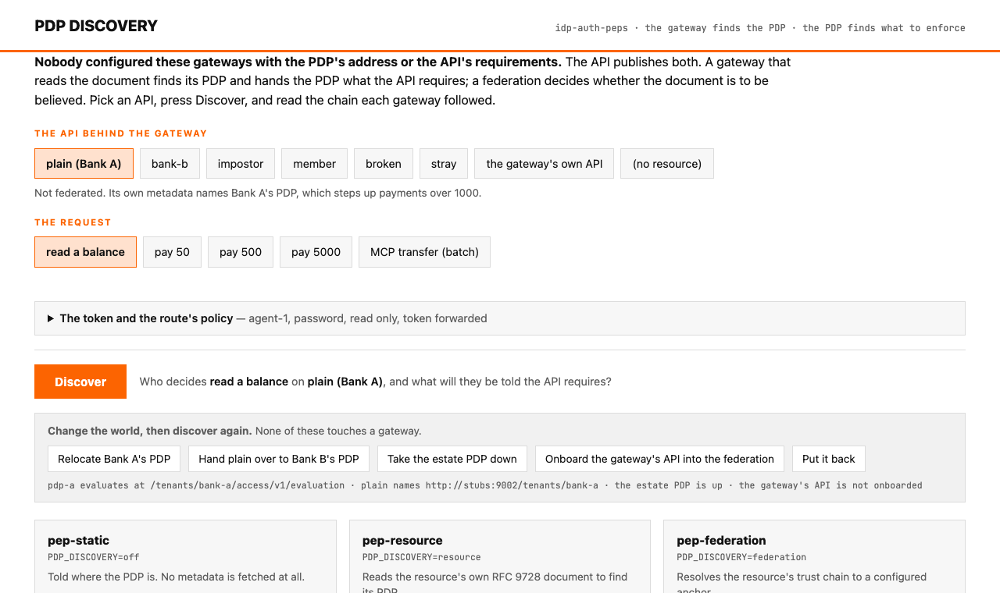
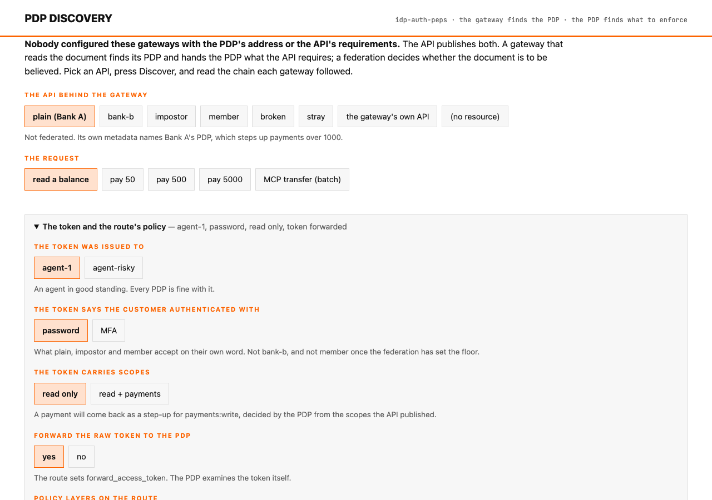
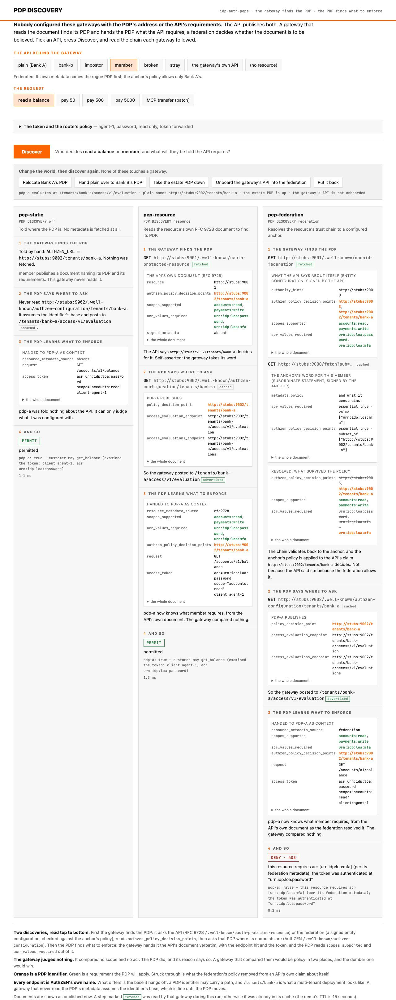
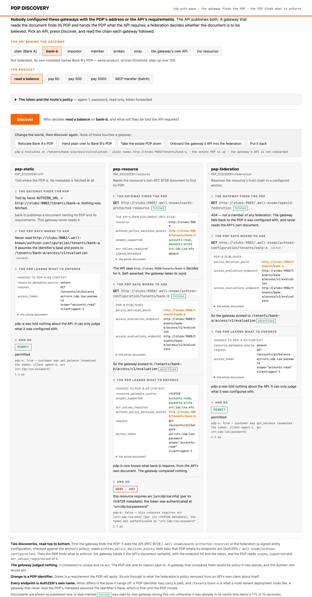
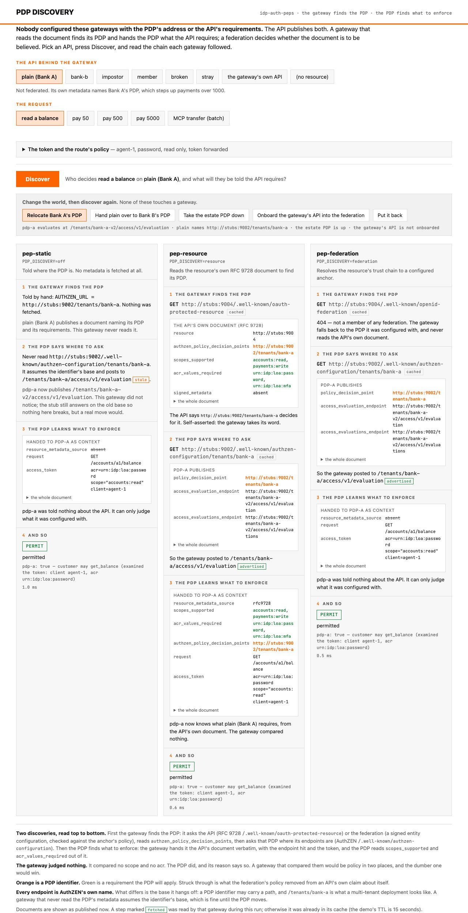
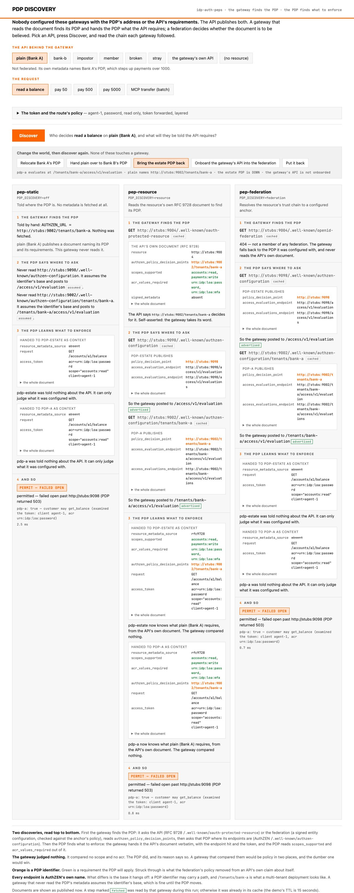
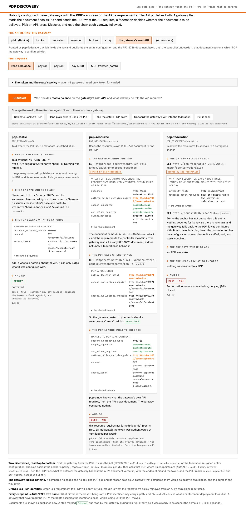
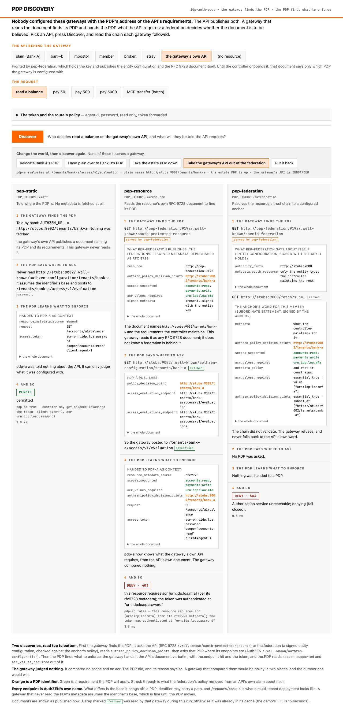

The demo
Every component wired together: a stub trust anchor, resources that are and are not federation members, two banks' PDPs, an estate PDP and a rogue one, coaz-pep three times in three discovery modes, the Kong plugin and the PingAccess rule in front of the same resource, and a console that shows the chain each gateway followed. Its compose file is the fullest worked configuration in the repository, and the console is the screen on which every setting's effect can be seen.
Run it
cd demo && docker compose up --build -d && ./demo.sh # the scripted walk
open http://localhost:8088 # the console
docker compose --profile kong up -d # add Kong on :8000, the plugin doing discovery in Lua
docker compose --profile pingaccess up -d # add PingAccess on :3000 (needs Ping DevOps credentials in demo/.env)
demo/run-local.sh --console # the same without Docker; needs GoThe cast
| Stub | Port | What it is |
|---|---|---|
anchor | 9000 | A federation trust anchor. Its policy for members: authzen_policy_decision_points must be a subset of [pdp-a], and acr_values_required is [MFA], whatever the member says. It onboards entities on request. |
member | 9001 | A federated resource. Its own RFC 9728 document names Bank A's PDP and says a password is enough; its entity configuration names the rogue PDP first. The anchor's policy strips the rogue and raises the acr floor to MFA. |
pdp-a | 9002 | Bank A's PDP, identifier …:9002/tenants/bank-a. Holds the token to what the resource published; steps up payments over 1000; advertises a batch endpoint. |
rogue-pdp | 9003 | Permits everything, logs loudly when asked, advertises no batch endpoint. |
plain | 9004 | Not federated. RFC 9728 metadata names Bank A's PDP; accepts a password. |
impostor | 9005 | Not federated. RFC 9728 metadata names the rogue PDP. |
broken | 9006 | Federated, but signs with a key the anchor never vouched for. |
stray | 9007 | No metadata of any kind. |
pdp-b | 9008 | Bank B's PDP, identifier …:9008/tenants/bank-b. Same product, stricter threshold: steps up payments over 100. |
bank-b | 9009 | Not federated. RFC 9728 metadata names Bank B's PDP; requires MFA. |
pdp-estate | 9098 | A generic PDP for the whole estate: judges the token and the client (agent-risky is on its watch list), knows nothing about any resource. The first layer. |
control | 9099 | The event feed the console traces, and the levers it pulls. Not part of any spec. |
| the gateway's own API | pep-federation:9192 | Not a stub. pep-federation is the federation entity for the API it fronts: it holds a key, publishes a minimal entity configuration, and republishes what the anchor resolves as that API's RFC 9728 document. |
Then coaz-pep three times: pep-static (:9192, told where its PDP is), pep-resource (:9193, trusts each resource's own well-known), pep-federation (:9194, trusts the federation's word).
The compose file
demo/docker-compose.yml, complete. Everything is plain http on a private network, hence PDP_DISCOVERY_INSECURE; do not copy that line anywhere real. Allowlists list each stub with its port because an entry matches scheme, host and port.
services:
stubs:
build: { context: ../core, target: demo-stubs }
environment:
STUB_HOST: stubs
ANCHORS_FILE: /shared/anchors.json
volumes: [ "shared:/shared" ]
ports: [ "9000-9009:9000-9009", "9098-9099:9098-9099" ]
healthcheck:
test: ["CMD", "wget", "-q", "-O", "-", "http://localhost:9099/healthz"]
interval: 2s
timeout: 2s
retries: 15
pep-static:
build: { context: ../core, target: coaz-pep }
environment: &pep-env
AUTHZEN_URL: http://stubs:9002/tenants/bank-a
AUTHZEN_API_KEY: static-pdp-key
CHECK_API_TOKEN: demo
MCP_UPSTREAM_ALLOWLIST: http://stubs:9001,http://stubs:9004,http://stubs:9005,http://stubs:9006,http://stubs:9009
PDP_METADATA_TTL: 15s # short so the console's trace shows fetches on every run; the shipped default is 5m
ports: [ "9192:9192" ]
depends_on: { stubs: { condition: service_healthy } }
pep-resource:
build: { context: ../core, target: coaz-pep }
environment:
<<: *pep-env
PDP_DISCOVERY: resource
PDP_DISCOVERY_INSECURE: "true"
RESOURCE_METADATA_ALLOWLIST: http://stubs:9001,http://stubs:9004,http://stubs:9005,http://stubs:9006,http://stubs:9007,http://stubs:9009,http://pep-federation:9192
# deliberately no PDP_ALLOWLIST (it warns at boot): the impostor may name the rogue
ports: [ "9193:9192" ]
depends_on: { stubs: { condition: service_healthy } }
pep-federation:
build: { context: ../core, target: coaz-pep }
environment:
<<: *pep-env
PDP_DISCOVERY: federation
PDP_DISCOVERY_INSECURE: "true"
RESOURCE_METADATA_ALLOWLIST: http://stubs:9001,http://stubs:9004,http://stubs:9005,http://stubs:9006,http://stubs:9007,http://stubs:9009,http://pep-federation:9192
PDP_ALLOWLIST: http://stubs:9002,http://stubs:9008,http://stubs:9098
FEDERATION_TRUST_ANCHORS_FILE: /shared/anchors.json
FEDERATION_FETCH_ALLOWLIST: http://stubs:9000
FEDERATION_ENTITY_ID: http://pep-federation:9192
FEDERATION_ENTITY_KEY_FILE: /tmp/entity-key.json
FEDERATION_ENTITY_KEY_GENERATE: "true"
FEDERATION_AUTHORITY_HINTS: http://stubs:9000
volumes: [ "shared:/shared:ro" ]
ports: [ "9194:9192" ]
depends_on: { stubs: { condition: service_healthy } }
console:
build: { context: ../core, target: demo-console }
environment:
LISTEN: ":8088"
STUBS_BASE: http://stubs
STUBS_CONTROL: http://stubs:9099
PEP_STATIC: http://pep-static:9192
PEP_RESOURCE: http://pep-resource:9192
PEP_FEDERATION: http://pep-federation:9192
GATEWAY_ENTITY: http://pep-federation:9192
CHECK_API_TOKEN: demo
ports: [ "8088:8088" ]
depends_on: { stubs: { condition: service_healthy } }
kong:
profiles: ["kong"]
image: kong:3.9
environment:
KONG_DATABASE: "off"
KONG_DECLARATIVE_CONFIG: /kong/kong.yml
KONG_PLUGINS: bundled,authzen-pdp
KONG_LUA_PACKAGE_PATH: /opt/?.lua;;
KONG_PROXY_LISTEN: 0.0.0.0:8000
KONG_ADMIN_LISTEN: "off"
volumes:
- ./kong/kong.yml:/kong/kong.yml:ro
- ../gateways/kong/authzen-pdp:/opt/kong/plugins/authzen-pdp:ro
ports: [ "8000:8000" ]
pingaccess:
profiles: ["pingaccess"]
build: { context: .., dockerfile: demo/pingaccess/Dockerfile }
environment:
PING_IDENTITY_ACCEPT_EULA: "YES"
PING_IDENTITY_DEVOPS_USER: ${PING_IDENTITY_DEVOPS_USER:-}
PING_IDENTITY_DEVOPS_KEY: ${PING_IDENTITY_DEVOPS_KEY:-}
AUTHZEN_URL: http://stubs:9002
AUTHZEN_API_KEY: static-pdp-key
RESOURCE: http://stubs:9004
SITE_TARGET: stubs:9004
PEP_LABEL: "PingAccess (resource discovery)"
ports: [ "3000:3000", "9443:9000" ] # the engine; the admin console (administrator / 2FederateM0re)
volumes:
shared:The console
Pick an API and a request, press Discover, and each of the three gateways shows the chain it followed, top to bottom: the document it read to find the PDP, the PDP's own metadata and the endpoint used, the context it handed the PDP, and last the decision.
The controls


forward_access_token, pdp_layers, and the token's claims.| Control | Options | What it sets |
|---|---|---|
| The API behind the gateway | plain, bank-b, impostor, member, broken, stray, the gateway's own API, no resource | The route's resource, which discovery starts from. |
| The request | read a balance, pay 50, pay 500, pay 5000, MCP transfer (batch) | The method, path and body; the MCP one is a tools/call whose mapping is a two-evaluation boxcar. |
| The token was issued to | agent-1, agent-risky | The token's client_id. The estate PDP has agent-risky on its watch list. |
| Authenticated with | password, MFA | The token's acr. |
| Scopes | read only, read + payments | The token's scope. |
| Forward the raw token | yes, no | The route's forward_access_token. |
| Policy layers | the API's PDP alone; the estate PDP first; the same, estate layer fail-open | The route's pdp_layers: nothing, http://stubs:9098,resource, or http://stubs:9098 fail-open,resource. |
The chain

member, a read-only password token. The static gateway reads nothing and permits. The resource gateway reads the API's own document, which says a password is enough, and permits. The federation gateway resolves the anchor's policy, which strikes the rogue PDP out of the API's claim and sets the floor at MFA, hands the PDP the resolved document, and the same PDP denies. Nothing but PDP_DISCOVERY differs.
bank-b, a password token. Bank B requires MFA in its own document. The static gateway's PDP was told nothing and permits; both discovering gateways hand their PDP the requirement, and it denies, citing the document it read.The levers
Four buttons change the world while it runs. None restarts a PEP or edits its configuration; the PEPs pick the change up on their next metadata refresh, and the documents in the chain change under them.

/tenants/bank-a-v2. The two gateways that read metadata follow; the static one keeps posting to the base it assumed, marked stale. This is the answer to "why not just set AUTHZEN_URL": because then this is a deploy.
fail-open, it is skipped and Bank A's PDP alone decides; the permit is marked and X-PDP-Fail-Open names what was skipped. With the plain layers option the same outage is a 503.

The control API
The stubs' control endpoint at :9099/control, which the console relays as /api/control. GET returns the state; POST {"op": …} pulls a lever.
| Op | Effect |
|---|---|
move_pdp | Bank A's PDP advertises its endpoints under /tenants/bank-a-v2. It still answers on the old base, so nothing breaks mid-flight; the trace shows who followed. |
repoint_plain | The plain resource's metadata names Bank B's PDP instead. No gateway is touched. |
estate_down / estate_up | The estate PDP's evaluation endpoints answer 503; its metadata stays up. |
onboard / offboard with "entity" | The anchor fetches the entity's configuration, checks it is self-signed, and starts (or stops) vouching for its keys, saying what the resource requires in its subordinate statement. |
reset | Everything back. |
curl -s -X POST -H 'Content-Type: application/json' -d '{"op":"onboard","entity":"http://pep-federation:9192"}' http://localhost:9099/control
curl -s http://localhost:9099/control | jq .
{ "onboarded": ["http://pep-federation:9192"], "pdp_down": [],
"pdp_evaluation_path": { "pdp-a": "/tenants/bank-a/access/v1/evaluation", … },
"pdp_home": { "pdp-a": "/tenants/bank-a", … },
"resource_pdps": { "plain": ["http://stubs:9002/tenants/bank-a"], … } }The scripted walk
demo/demo.sh runs the same requests against the three PEPs' HTTP check APIs and prints the decision, the status and the body. Its sections, in order: what the metadata says; where the PDP comes from and what it was told; two banks, one gateway; what the resource requires is the PDP's to enforce, and the federation sets the floor; layers; failing open, deliberately; the gateway as the resource's federation face; the challenge contract; and Kong, when the profile is up. Shape the token with CLIENT, ACR and SCOPE; set FORWARD=no or LAYERS per call.
One container, hosted
demo/railway/Dockerfile builds the stubs, the three PEPs and the console into one image, and demo/railway/entrypoint.sh runs them on localhost with the console on $PORT. It is the local runner without the Go toolchain, and it is what runs at demo-production-6ee6.up.railway.app, redeployed on every push to main.
docker build -f demo/railway/Dockerfile -t idp-auth-peps-demo .
docker run --rm -p 8088:8088 idp-auth-peps-demoOn Railway: a service pointed at the repository with the Dockerfile path set to demo/railway/Dockerfile and the healthcheck at /healthz. The levers are shared state, so two people clicking at once will surprise each other, and nothing in it is authenticated: it is a demo of PDP discovery, not a service.